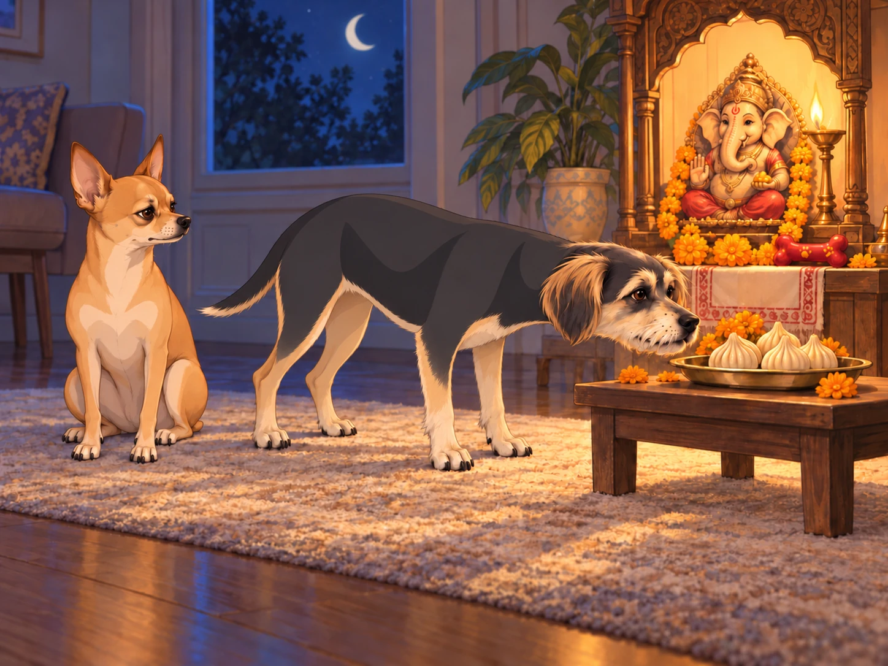
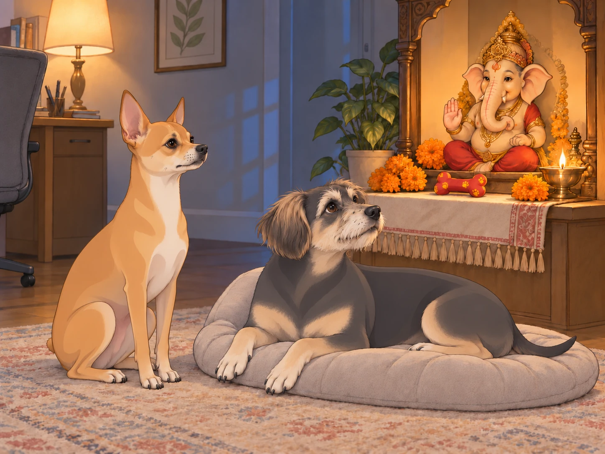

The house was silent.
Heather and Sagar slept peacefully, the glow of the diya flickering in the corner, marigold petals still fragrant. Neet lay at his usual post near the shrine, paws tucked under him, while Buddy snored loudly from his pillow throne.
And then…
“Neet. Buddy.”
The voice was low enough not to wake the humans, but both dogs heard it clearly. The dogs blinked awake. The Ganesh murti was glowing faintly, its eyes twinkling with life.
“B-Bappa?” Buddy stammered, eyes wide as saucers.
Neet immediately sat up, chest puffed, tail stiff. “Confirmed. Divine visitation. Standing to attention!”
Ganesha chuckled warmly. “Relax, General. I didn’t come to inspect your rank. I came to… talk.”
Neet lowered his chest a fraction. Buddy checked whether he was still allowed to bring his pillow.
The First Conversation
Buddy shuffled closer, whispering: “So… you’re real? You’re really here?”
Ganesha tilted his head, trunk swaying gently. “I’ve always been real. Every year, in every home, I arrive when I’m called. Just as the sun doesn’t ask permission to rise, I don’t need proof. Devotion is my doorway.”
Neet bowed slightly. “What is your mission here, Lord?”
“People welcome me with songs, sweets, garlands,” Ganesha said. “They think I come for the offerings. But did you hear Heather laughing this morning?”
Buddy glanced at his bone by the shrine. “So… the modaks aren’t the main thing?”
Ganesha’s eyes twinkled. “They are delicious, of course. But between us? The joy with which your Queen made them — that’s the real offering.”
Buddy sighed dramatically. “So… if I eat a few, is that… acceptable?”
Ganesha chuckled. “Moderation, little one. Moderation.”
Neet smirked. “Not approved.”
Buddy had already leaned toward the plate. He stayed where he was, nose extended.

“I’m moderating.”
“Backwards,” Neet said.
Buddy shuffled back one paw’s length. Ganesha’s trunk curled with amusement.
The Random Daylight Chat
The next afternoon, while Heather hummed in the kitchen and Sagar typed at his desk, the voice returned.
“Neet, you take your duties very seriously.”
Neet straightened from his sunbeam nap. “Of course. Someone has to maintain order.”
“True,” Ganesha said, his voice like rolling laughter. “But sometimes, discipline can blind you. Obstacles aren’t always enemies. Sometimes, they’re teachers.”
Neet looked toward the closet. “Like the Roaring Serpent?”
Ganesha chuckled. “Even the vacuum has lessons. Perhaps it teaches courage, or patience, or the futility of barking at dust.”
Buddy, overhearing, gasped. “WAIT. The vacuum is a spiritual test?! I failed that test a hundred times!”
Ganesha laughed, trunk curling like a question mark. “You haven’t failed, Buddy. You’re still taking the exam.”
Buddy wagged proudly. “Best exam ever.”
The closet door clicked. Buddy got up and moved behind Neet.
“Where are you going?”
“Study group.”
Neet held his position. One ear turned toward the closet. Then the other.
The Midnight Wisdom
Another night, as the crickets sang outside, Neet and Buddy crept close to the shrine.
“Bappa,” Neet asked, “how do you handle being welcomed with so much… noise? People everywhere, flowers, drums, sweets. Isn’t it overwhelming?”
Ganesha’s voice softened. “Ah, but that noise is love. Every chant, every decoration, every imperfect song — it’s their way of saying: We remember you. We want you here. Imagine a child scribbling a drawing for their parent. The lines are crooked, the colors spill. Yet the parent treasures it more than any masterpiece. That is how I see their devotion.”
Buddy tilted his head. “So even my squeaky toy offering counts?”
Ganesha beamed. “Especially your squeaky toy.”

Neet raised an eyebrow. “Even Buddy’s howling during aarti?”
“Even that,” Ganesha said with a wink. “It made them laugh. Laughter is also prayer.”
Buddy drew a pleased breath.
“Quiet prayer,” Neet whispered, glancing toward the bedroom.
Buddy let the breath out through his nose. The humans slept on.
The Secret of His Departure
One evening, as the family finished dinner, Ganesha whispered again, this time his voice a little quieter, more thoughtful.
“You know, my little generals, soon I will have to leave. They will perform visarjan, the immersion. But do not be sad. My leaving is part of the lesson.”
Buddy’s ears drooped. “But why leave? Can’t you just… stay here forever? We could share snacks!”
Ganesha’s eyes softened. “If I stayed, they might forget to look for the divine in daily life. I come, I fill their hearts, and then I go — so that they learn the Lord is everywhere: in a sunrise, in a laugh, in a simple meal together.”
Neet lowered his head. “Understood. Duty fulfilled, then return to base.”
Ganesha chuckled. “Exactly. You understand the rhythm of service.”
Buddy sniffled. “I’ll miss you.”
“I’ll still be here,” Ganesha whispered. “Every time you sit in a sunbeam, every time Heather laughs, every time Sagar pats your head with love — that’s me. I’m in the joy you create together.”
Closing Scene
The diya flickered. The house was still.
Neet bowed his head. “Approved.”
Buddy moved his pillow a little nearer the shrine. There was still time before the farewell.
And in that moment, under the twinkling string lights and the quiet gaze of Ganesha, the dogs curled up and drifted into peaceful sleep, carrying with them the secret conversations no one else would ever know.